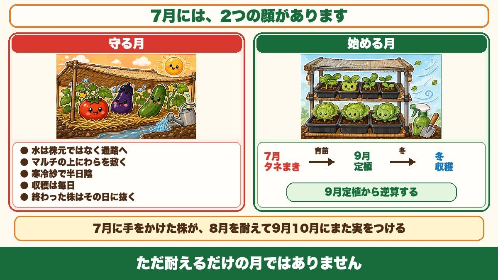
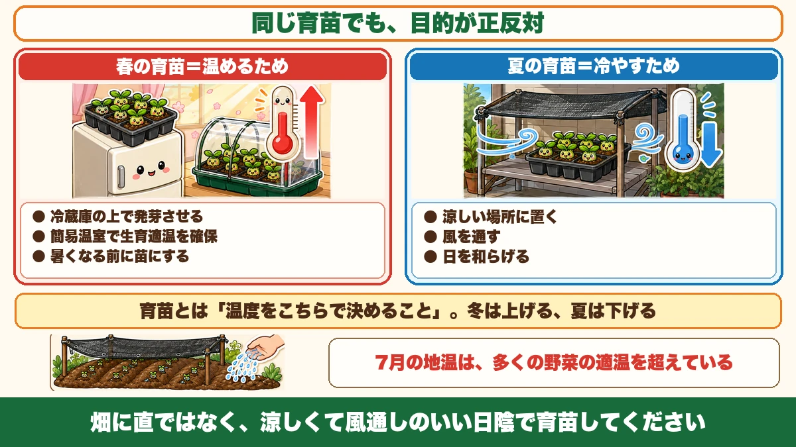
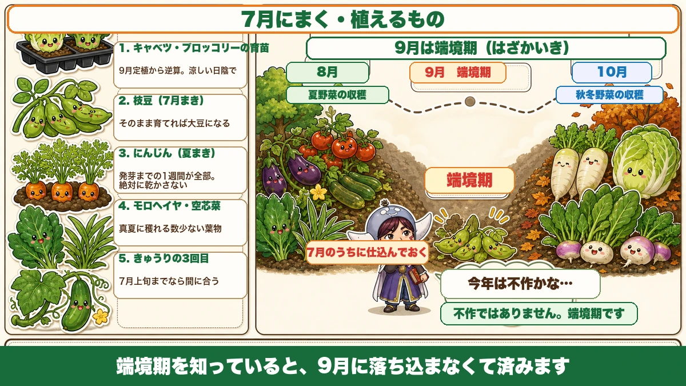

7月にまく・植える野菜｜秋冬野菜の苗づくり・夏まきにんじん・夏の枝豆と大豆
どうも、8150（えいこう）です🌱 家庭菜園歴8年、理科の教員免許を持っていて、有機・無農薬で野菜を育てています。
📖 この記事の目次
この記事で分かること
- 7月の畑には、2つの顔があります。夏野菜を暑さから「守る」ことと、秋冬野菜を「始める」ことです。
- キャベツやブロッコリーは、9月に畑へ植える苗を、7月から作り始めます。始めるのが遅れると、玉が巻かなかったり、つぼみが小さくなったりします。
- 夏の苗づくりは、春とは逆で、暑さをやわらげるのが目的です。風通しのよい半日陰で育てます。
- にんじんの夏まきは、7月中に終わらせるのが目安。いちばんの山場は、芽が出るまで土を乾かさないことです。
- 夏にまく枝豆は、春よりむずかしくなります。若いうちにとれば枝豆、枯れるまで待てば大豆として楽しめます。
- 9月は、夏野菜が終わって秋冬野菜がまだとれない「収穫の谷間」になりがちです。7月のうちに、そこを埋める野菜も考えておきます。
7月の畑は、トマトやきゅうり、なすがどんどんとれて、毎日がにぎやかですよね。暑い中の水やりや収穫で、正直それだけで手いっぱい、という方も多いと思います。
でも実は、7月は秋冬野菜の準備が始まる月でもあるんです。「え、まだ夏真っ盛りなのに？」と思うかもしれませんが、ここで動いておくかどうかで、秋から冬の畑の充実ぶりがかなり変わります。
安心してください。全部をやる必要はありません。この記事では、7月にやることを整理して、何を優先すればいいかまで順番に書いていきます。

早見：7月の畑の基本（ひと目で分かる目安）
7月に始めるもの
- キャベツ・ブロッコリーの苗づくり：7月中に種まき → 9月前半に畑へ植える
- 冬どりキャベツ：7月下旬〜8月中旬に種まき → 8月中旬〜9月初めに植える → 11月〜1月に収穫
- にんじん（夏まき）：7月中、遅くとも7月末までにまく
- 枝豆・大豆（夏まき）：防虫ネットをかけて育てる。若どりで枝豆、完熟で大豆
- 夏の葉物：モロヘイヤ、空芯菜など、暑さに強いもの
- 9月の谷間を埋めるもの：四角豆（しかくまめ）、ケールなど
7月に始めなくていいもの
- 白菜：育つのが早いので、8月に入ってからでも間に合います
7月に守るもの
- トマト、なす、きゅうり、ピーマン、オクラなどの夏野菜
- 春にまいた枝豆（さやがふくらむ時期は、水切れに注意）
覚えておきたい目安
- キャベツ・ブロッコリーの苗は、本葉4〜5枚で畑に植える
- 植える畑は、土づくりから3週間くらい、時間がなければ2週間くらいあける
- にんじんは、芽が出るまでに1週間以上かかる。そのあいだ土を乾かさない
- 枝豆の発芽にちょうどいい温度は25度くらい。10度を下回ると芽が出にくくなります（春まきで気をつけたい話です）
7月の作業カレンダー（上旬・中旬・下旬）
- 上旬：秋冬に育てる野菜と品種を決める。種を買う。苗を置く場所と防虫ネットを準備する。夏野菜の株元に敷きものをする
- 中旬：キャベツ・ブロッコリーの種まき。にんじんの種まき（雨の予報を見ながら）。夏の葉物や四角豆の種まき
- 下旬：冬どりキャベツの種まき。にんじんのまき残しがあれば、月末までにまき終える。芽が出なかったところのまき直し。苗の水やりと虫の見回り
地域や、その年の梅雨明けの時期によって前後します。梅雨が長引く年は、その雨をにんじんの発芽に生かせることもあります。
作業の手順
ここからは、7月にやることを、作業ごとに順番に書いていきます。
手順1：まず、秋冬に何を育てるか決める
7月の作業は、秋から冬に何を育てたいかで決まります。キャベツやブロッコリーを苗から作るなら、7月が種まきの時期です。苗をお店で買うつもりなら、7月は種まきをせず、畑の準備の計画だけ立てておけば大丈夫です。
自分で苗を作るか、苗を買うか。ここを最初に決めておくと、7月にやることがぐっと減ります。
苗を作る場合は、品種選びも7月のうちに。キャベツなら、秋に早くとれるもの、冬にじっくり育つもの、とんがった形のものなど、いろいろあります。ブロッコリーなら、てっぺんのつぼみをとったあとも、脇から小さなつぼみが次々出てくる品種や、茎ブロッコリーを選ぶと、長く収穫を楽しめます。
キャベツの品種の選び方
キャベツは、品種によって、植えてからとれるまでの期間がかなり違います。
- 早生（わせ）：早くとれる。秋のうちに収穫したいとき
- 中生（なかて）・晩生（おくて）：じっくり育つ。11月から1月ごろに収穫する冬どり向き
- 形の違うもの：とんがった形のもの、小玉のもの、葉の色が紫のものなど
冬に収穫するキャベツを狙うなら、育つ期間が少し長めの中生〜晩生の品種がおすすめです。寒さにあたって甘みが増したキャベツは、冬ならではの楽しみです。
収穫の方法によっては、とったあとの茎から新しい芽が出て、小さなキャベツがもう一度できることもあります。
ブロッコリーの品種の選び方
- てっぺんに大きなつぼみが1つできるタイプ：とったら終わり、という育て方
- てっぺんをとったあと、脇から小さなつぼみが次々出るタイプ：長く収穫できる
- 茎ブロッコリー：細長い茎の先に小さなつぼみがつく。何度も摘みとれる
家庭菜園なら、脇からつぼみが出るタイプや茎ブロッコリーを選ぶと、少しずつ長く楽しめます。
芽キャベツにも挑戦できる
芽キャベツは、太い茎のまわりに、小さなキャベツが鈴なりにつく野菜です。うまくいけば、茎の下から50cmくらいの高さまで、小さなキャベツがびっしりつきます。
キャベツと同じく7月に種をまき、9月に植えます。育つ期間が長く、追肥も大事なので、少し手はかかりますが、収穫のときの見た目のおもしろさは格別です。
手順2：9月の植えつけから逆算する
キャベツやブロッコリーは、9月に畑へ植えるのが一般的です。苗が植えられる大きさ（本葉4〜5枚）になるまでには時間がかかるので、逆算すると7月に種をまくことになります。
ここで大事なのは、遅らせないことです。秋冬野菜は、寒くなる前に、外側の葉（外葉）をどれだけ大きく広げられるかが勝負です。外葉が十分に育たないうちに寒くなると、キャベツは玉が巻かず、ブロッコリーはつぼみが小さくなってしまいます。植えつけが1週間ずれただけで、収穫に大きく響く、という説明もあるほどです。
冬どりのキャベツを狙うなら、7月下旬から8月中旬に種をまいて、8月中旬から9月初めに植え、11月から1月にかけて収穫する、という流れになります。12月に冷えこむと、キャベツは甘みが増しますよ。
手順3：苗を育てる場所を決める
夏の苗づくりは、どこで育てるかがいちばん大事です。
おすすめは、畑に直接まくのではなく、ポットやセルトレイに種をまいて、涼しい場所で育てる方法です。
- 風通しのよい、半日陰の場所
- 朝のやわらかい光は当てて、昼の強い日差しは遮る
- 防虫ネットで囲んで、虫を防ぐ
- 地面に直接置かず、台や棚の上に置いて、照り返しの熱と虫を避ける
日陰といっても、真っ暗な場所はだめです。光が足りないと、苗がひょろひょろと伸びてしまいます。朝は日が当たって、昼からは日陰になるような場所がちょうどいいです。そういう場所がなければ、遮光ネットで昼の日差しをやわらげます。
手順4：種をまく
ポットやセルトレイに種まき用の土を入れて、種をまきます。
- 土は、まく前にしっかり湿らせておく
- 種は、浅めにまく
- まいたら、軽く土をかけて、手で押さえる
- 芽が出るまで、乾かさないように新聞紙や不織布をかけておく（芽が出たらすぐ外す）
芽が出たら、かぶせていたものを外して、光に当てます。ここで外し忘れると、一晩でひょろひょろになってしまうので、毎朝のぞいてください。
苗床で育てる方法もある
ポットやセルトレイではなく、畑のすみに小さな苗床を作って、そこに種をまいて育てる方法もあります。
- 苗床の上に、日よけと防虫ネットをかける
- すじまきして、混んできたら間引く
- 本葉が出てきたら、植える場所へ移す
たくさんの苗をまとめて作れて、ポットより乾きにくいのが利点です。ただ、虫の見回りや水やりは、ポットと同じようにこまめに必要です。
セルトレイから、ポットに植えかえる
セルトレイにまいた場合は、本葉が2枚くらいになったら、ひとまわり大きなポットに植えかえると、根がのびのび育ちます。そのまま本葉4〜5枚までセルトレイで育てる方法もありますが、根がつまってくるので、水切れしやすくなります。
手順5：苗を育てる
夏の苗は、とにかく乾きやすいです。朝に水をやっても、夕方にはからからになっていることもあります。
- 朝、土の表面が乾いていたら、たっぷり水をやる
- 夕方にもう一度、土の乾き具合を見る
- 昼の暑い時間の水やりは、ポットの中が蒸れやすいので避ける
虫も、夏は多いです。キャベツやブロッコリーの苗は、青虫やコナガの幼虫に、あっという間に食べられてしまいます。防虫ネットは、種をまいた日から、苗を植えるまでずっとかけておいてください。
手順6：植える畑の準備をする
苗を育てているあいだに、植える畑の準備も進めておきます。
夏野菜の片づけが終わったら、土を耕して、たい肥や肥料を混ぜます。土づくりから植えつけまでは、3週間くらい、時間がなければ2週間くらいあけるのが目安です。9月前半に植えるなら、8月中には土づくりをすませておきたいところです。
夏野菜がまだとれているうちは、無理に片づけなくても大丈夫です。畑のどこを先に空けるか、7月のうちに見当をつけておくだけでも、8月の動きがずいぶん楽になります。
植える前に、日差しに慣らす
日陰で育てた苗を、いきなり真夏の畑に植えると、強い日差しに驚いて、しおれてしまうことがあります。
植える1週間くらい前から、少しずつ日に当てる時間を長くして、外の環境に慣らしておくと、植えたあとの落ちつきが早くなります。植える日は、曇りの日や、夕方の涼しい時間を選ぶとさらに安心です。
手順7：9月、苗を植える
本葉が4〜5枚になったら、畑へ植えます。
9月になっても暑い日が続くことが多いので、植えつけたあとも、しばらくは寒冷紗（かんれいしゃ）や遮光ネットで日差しをやわらげてあげると、苗が落ちつきやすくなります。防虫ネットもかけておきます。
手順8：にんじんをまく
にんじんの夏まきは、7月の大事な作業の1つです。目安は、7月中、遅くとも7月末までに終わらせること。それより遅れると、寒くなる前に根が十分に太らず、収穫に影響が出ます。
にんじんは、芽が出るまでがいちばんの山場です。
- 種まきの前に、畑をしっかり湿らせておく
- 溝を浅く作って、種をまく（にんじんは光を好む種なので、土は薄くかける）
- まいたら、上から手やくわで軽く押さえる（土と種をくっつけて、水を吸いやすくするため）
- その上に、もみ殻や刈った草、わら、不織布などをかけて、乾燥を防ぐ
にんじんは、条件がそろっていても、芽が出るまでに1週間以上かかります。そのあいだ、土を乾かさないことが何より大事です。真夏の日差しだと、朝に水をやっても夕方には乾いてしまうこともあるので、乾燥を防ぐかぶせものが欠かせません。
雨の前にまいて、雨の水を利用する、という方法もあります。天気予報を見ながら、まく日を決めるのも1つの手です。
手順9：にんじんに水をやる
にんじんの種は軽くて、上から勢いよく水をかけると流れてしまいます。
水をやるときは、じょうろを低い位置に下げて、種をまいた筋の横から、そっと水を流しこむようにします。こうすると、種を流さずに、土をしっかり湿らせることができます。
芽が出たあとも、本葉が出てくるまでは、土の湿り気を保ってください。
それでも、夏まきのにんじんは、なかなか一度ではうまくいかないことがあります。7月の早めにまいておけば、芽が出なかったときにもう一度まき直す時間が残ります。「早めにまく」のは、失敗したときの保険でもあるんですね。
手順10：夏の枝豆・大豆をまく
春にまいた枝豆がとれたあと、もう一度枝豆をまく、という楽しみ方もあります。
ただ、夏にまく枝豆は、春よりむずかしくなります。
- 梅雨明けからは、カメムシなど、さやを食べる虫が一気に増える
- 暑くて雨が少ないと、さやがなかなかふくらまない
春の枝豆を6月中にとってしまうのは、この虫が増える前に逃げきるため、という考え方があるくらいです。
夏にまくなら、次のことを守ってください。
- 種をまいた日から、防虫ネットを必ずかける
- 肥料の多い畑は避けて、やせ気味の場所にまく（葉ばかり茂って実がつかない「つるぼけ」を防ぐため）
- さやがふくらむ時期は、水を切らさない
夏にまいた豆は、9月の終わりごろに枝豆としてとれます。そのまま枯れるまで待てば、大豆として収穫することもできます。1回の種まきで2通り楽しめるのは、夏まきならではですね。
手順11：夏の葉物をまく
暑さに強い夏の葉物も、7月にまけます。
- モロヘイヤ
- 空芯菜（くうしんさい）
どちらも暑さに強く、夏のあいだ葉や茎の先を摘みとりながら、長く収穫できます。葉物が少なくなる夏の食卓に、ありがたい存在です。
モロヘイヤ・空芯菜の育て方のこつ
モロヘイヤは、草丈が30〜40cmくらいになったら、先端を摘みとります。すると脇から新しい芽が次々に伸びて、その先をまた摘みとれるようになります。こうして、夏から秋口まで長く収穫できます。
ひとつ注意があります。モロヘイヤは、秋になると花が咲いて、さやができます。このさやや種は食べられません。毒になる成分を含むので、食べないように、と農林水産省も注意をよびかけています。花が咲いたら、葉の収穫もそろそろ終わり、と考えてください。
空芯菜は、水が大好きな野菜です。乾かさないように育てると、茎がやわらかく育ちます。こちらも、伸びた茎の先を摘みとると、脇から次の芽が出てきます。

夏野菜を守る作業
7月は、始める作業と同時に、いま育っている夏野菜を守る作業もあります。
乾燥を防ぐ
梅雨が明けると、畑は一気に乾きます。株元に、わらや刈った草、もみ殻などを敷いて、土の乾燥を防ぎます。
おもしろい方法として、収穫が終わったキャベツの外葉を乾かして、株元に敷く、というやり方もあります。葉が大きいので、1枚ずつはがして、しっかり乾かしてから使います。
枝豆は、さやがふくらむ時期に水を
春にまいた枝豆は、7月ごろ、さやの中の豆がふくらむ時期に入ります。この時期は、水がたっぷり必要です。
マルチをしている畑なら、ある程度は水分が保たれます。マルチをしていない畑やプランターなら、わらを敷いたり、水やりをしたりして、乾かさないようにしてください。ただ、水のやりすぎで土がずっとじめじめしているのもよくないので、乾きすぎず、湿りすぎず、を心がけます。
水やりは、朝か夕方に
真夏の昼に水をやると、土の中で水が温まって、根をいためてしまうことがあります。水やりは、朝の涼しいうちか、夕方の日が落ちてからにします。
朝にたっぷりやって、夕方に乾き具合を見て足りなければ足す、というのが基本です。
とり遅れに気をつける
夏野菜は、とれる量が一気に増える時期です。きゅうりやオクラは、少し目を離すと、すぐに大きくなりすぎてしまいます。とり遅れると、実がかたくなったり、株が疲れたりするので、こまめに収穫してください。
9月の「収穫の谷間」を埋める
9月は、とれる野菜が少なくなる
9月ごろは、夏野菜が終わりに近づき、秋冬野菜はまだ育っている途中、という時期です。とれる野菜が途切れやすく、昔から、野菜が少ない季節と言われてきました。
毎年、9月になると畑がなんとなくさびしい…と感じる方は、この谷間にはまっているのかもしれません。
谷間を埋める野菜の例
7月のうちに種をまいておくと、9月ごろに収穫できる野菜もあります。
- 四角豆（しかくまめ）：アジア生まれの豆で、暑さに強い野菜です。さやの断面が四角い形をしているのが名前の由来です
- ケール：葉がちりめん状に縮れた種類もあります。夏に植えて、秋から収穫できます
- モロヘイヤや空芯菜：夏のあいだから、秋口まで長く摘みとれます
四角豆とケールのこと
四角豆は、まだあまり知られていない野菜ですが、真夏でもよく育ちます。つるが伸びるので、支柱やネットに絡ませて育てます。若いさやを、さっとゆでたり炒めたりして食べます。
ケールは、キャベツのなかまで、葉を1枚ずつかきとって収穫します。葉がちりめん状に縮れた種類は、見た目もかわいく、サラダや炒めものにも使えます。春に植えたものを夏越しさせて、秋まで収穫を続ける、という育て方もあります。
一度に全部とらない、という考え方
家庭菜園では、同じ野菜を一度にたくさん作って一斉にとるより、少しずつ、長い期間とれるようにするほうが、食卓には向いています。たくさん一度にとれても、食べきれないですよね。
キャベツなら、早くとれる品種と冬にとれる品種を組み合わせる。ブロッコリーなら、脇からつぼみが出てくる品種を選ぶ。種まきの時期を少しずつずらす。こうした工夫で、収穫の谷間を小さくできます。

7月の優先順位
全部はできなくて当たり前
暑い7月に、夏野菜の世話も、秋冬の準備も、全部完ぺきにこなすのはたいへんです。
迷ったら、こう考えてみてください。
- キャベツ・ブロッコリーを苗から作るなら：種まきと、苗を置く場所の準備がいちばん先
- 苗を買うなら：7月は夏野菜の世話を優先して、8月に土づくり
- にんじんを作りたいなら：7月末までに種まき
- 時間に余裕があれば：夏の枝豆、夏の葉物、谷間を埋める野菜
手帳やカレンダーに書いておく
7月の作業は、9月の植えつけ、10月以降の収穫へとつながっていきます。種をまいた日、芽が出た日、植える予定の日を、手帳やカレンダーに書いておくと、次の年の計画がずっと立てやすくなります。今年うまくいかなかったことも、書いておけば来年の作戦になりますよ。
暑さに気をつけて
真夏の畑仕事は、体への負担も大きいです。朝の涼しいうちや夕方に作業をして、こまめに水分をとりながら進めてください。無理をしないことも、7月の大事な仕事の1つです。
失敗の見分け方
苗がひょろひょろに伸びた
光が足りないか、芽が出たあとも、かぶせものを外し忘れた可能性があります。日陰すぎる場所なら、朝の光が当たる場所に移してください。混みあっているなら、間引いて風通しをよくします。
苗の葉が白っぽく焼けた
昼の強い日差しに当たりすぎた可能性があります。遮光ネットをかけるか、昼から日陰になる場所に移します。
苗が穴だらけになった
青虫やコナガなどに食べられています。防虫ネットに、すき間や破れがないか確かめてください。ネットの中に虫が入りこんでいたら、見つけて取り除きます。
にんじんの芽が出ない
いちばん多いのは、土の乾燥です。種をまいたあと、一度でも土がからからに乾くと、芽が出にくくなります。かぶせものが足りていたか、水やりの間隔が空きすぎていなかったか見直してください。7月中なら、まき直しも間に合います。
夏の枝豆のさやがふくらまない
暑さと水不足、または虫の被害が考えられます。さやに小さな穴があったり、しみがあったりしたら、カメムシなどの虫です。防虫ネットを見直し、さやがふくらむ時期の水やりを増やしてください。
キャベツが巻かない・ブロッコリーのつぼみが小さい（秋になってから）
苗を植えるのが遅れて、寒くなる前に外葉が十分に育たなかった可能性があります。次の年は、7月の種まきを少し早めてみてください。
説明が分かれていること
にんじんの種：そのままの種か、コーティングした種か
- そのままの種がいい、という説明：コーティングした種は、まわりの膜が溶けるのに水がたくさん必要で、乾きやすい夏はかえって芽が出にくい。値段のわりに粒数も少ない
- コーティングした種がいい、という説明：粒が大きくて、1粒ずつまきやすい。芽を出させやすい
どちらにも理由があります。夏の乾燥が心配なら、そのままの種。まきやすさを重視するなら、コーティングした種。水をしっかり保てるかどうかで選ぶといいと思います。
にんじんの肥料：前の野菜の残りで育てるか、肥料を入れるか
- 前に育てた野菜の肥料が残っている畑なら、新しく肥料を入れなくてもいい、という説明
- 最初から肥料を効かせて育てたほうがいい、という説明
畑のこれまでの使い方によって変わります。夏野菜をよく育てた畑なら、肥料が残っていることが多いので、控えめから始めると安心です。
にんじんの畑：マルチなしか、穴あきマルチか
- マルチをせずに、筋まきして、不織布をかけて乾燥を防ぐ、という一般的なやり方
- 穴のあいたマルチを張ってまく、というやり方
マルチをすると、土の乾燥や雑草を防ぎやすくなります。ただ、黒いマルチは夏に地温が上がりすぎることもあるので、白黒のマルチ（白い面を上にするもの）を使う、という工夫もあります。
キャベツ・ブロッコリーの植えつけ：遅らせないか、暑い年は少し遅くてもいいか
- 植えつけを遅らせないことがいちばん大事、という説明
- 暑い年は、植えつけが多少遅れても影響が出にくい。ただし9月中旬までには植え終わる、という説明
その年の暑さによって変わります。どちらの説明でも、「9月のうちに、なるべく早めに」は共通しています。
ブロッコリーの追肥：控えめか、こまめにか
- 植えて1か月少々で追肥する。たくさんやると虫や病気が増えたり、味が落ちたりするので、量を控えめにする、という説明
- 2週間に1回くらい、こまめに追肥する。てっぺんのつぼみをとったあとも、脇から出るつぼみのために続ける、という説明
脇からつぼみがたくさん出る品種で長くとりたいなら、追肥も長く続けることになります。てっぺんの1個をとって終わりなら、控えめで十分です。
芽キャベツは、初心者向けか
- 初めての人でも、ゲーム感覚で楽しめる、という説明
- 追肥や時期の管理が大事で、慣れた人向け、という説明
茎のまわりに小さなキャベツが鈴なりになるようすは、見ているだけで楽しいです。挑戦するなら、追肥と、植える時期を遅らせないことに気をつけてください。
よくある質問
Q. 7月に苗を作る時間がありません
A. 9月にお店で苗を買えば大丈夫です。苗を買う場合は、7月は種まきをせず、夏野菜の世話を優先して、8月に土づくりをすませておきましょう。
Q. 白菜も7月にまいたほうがいいですか？
A. 白菜は育つのが早いので、7月にまかなくても間に合います。8月に入ってからの種まきで大丈夫です。
Q. キャベツの苗を畑に直接まいて育ててもいいですか？
A. できないわけではありません。その場合は、遮光ネットと防虫ネットをかけて、水をしっかりやり、暑さをやわらげる対策を必ずしてください。ポットで育てたほうが、目が届きやすく、管理は楽です。
Q. にんじんの種まきが8月になってしまいました
A. 地域にもよりますが、遅れるほど、寒くなる前に根が太りにくくなります。8月にまくなら、早く育つ品種を選んだり、小さめでとることを考えたりするといいと思います。
Q. ベランダでも7月の苗づくりはできますか？
A. できます。ベランダの、昼から日陰になる場所は、夏の苗づくりに向いていることも多いです。防虫ネットで囲うのを忘れずに。照り返しが強い場合は、台の上に置いてください。
Q. 夏の枝豆と、春の枝豆の品種は同じでいいですか？
A. 春に育てた品種をそのまま夏にまくと、うまく育たないことがあります。夏まきに向いた品種を選ぶか、大豆の品種をまいて、若いうちに枝豆としてとる方法もあります。
Q. 苗を植える前に、夏野菜を抜かないといけませんか？
A. 植える場所だけ空いていれば大丈夫です。夏野菜がまだとれているなら、別の場所に植えるか、植える場所の夏野菜から順に片づけていきましょう。
Q. にんじんの芽が出たら、次は何をすればいいですか？
A. 芽がそろってきたら、混みあったところから間引いていきます。本葉が1〜2枚のころに1回目、3〜4枚のころに2回目、というように、何回かに分けて少しずつ間を広げていくのが基本です。間引いた若い葉は、みそ汁やかき揚げに使えます。夏まきのにんじんは、芽が出たあとに雑草も一緒に伸びてくるので、小さいうちに草をとっておくと、あとが楽になります。
Q. 苗を買う場合、いつごろお店に並びますか？
A. 地域にもよりますが、キャベツやブロッコリーの苗は、8月の終わりから9月にかけて店頭に並ぶことが多いです。人気の品種は早くなくなることもあるので、こまめにのぞいてみてください。
Q. 種をまいたら、芽がそろわずにばらばらに出てきました
A. 夏は、場所によって土の乾き方が違うので、芽の出方がばらつくことがあります。遅れて出てきた芽も、そのまま育てて大丈夫です。苗の大きさがそろわないときは、大きいものから順に植えていきましょう。
Q. 防虫ネットをかけたのに、苗に虫がつきました
A. ネットのすそにすき間があったり、種をまく前から土の中に虫や卵がいたりすると、ネットの中で増えることがあります。すそを土や重しでしっかり押さえ、ネットの中もときどきのぞいて、見つけたら取り除いてください。
Q. 7月に、ほかにまけるものはありますか？
A. この記事で紹介したもの以外にも、地域によっては、秋に収穫するいんげんや、夏の終わりに向けたきゅうりなどをまく方もいます。ただ、真夏の種まきは乾燥と虫との勝負になるので、最初は2〜3種類にしぼると、世話が行き届きやすいです。
学ぶ🔬 なぜ夏の苗づくりは「冷やす」のか
ここからは、7月の作業のしくみについて、少しだけ深く書いておきます。読み飛ばしても大丈夫です。
春の苗づくりと、夏の苗づくりは目的が逆
春の苗づくりは、寒さとの勝負です。トマトやなす、枝豆などの夏野菜は、暖かくないと芽が出ません。だから、ビニールで囲ったり、日当たりのいい場所に置いたりして、温めながら育てます。
夏の苗づくりは、その逆で、暑さとの勝負です。キャベツやブロッコリーは、もともと涼しい気候を好む野菜です。真夏の強い日差しと暑さの中では、苗が弱ってしまいます。だから、日陰に置いたり、風通しをよくしたりして、暑さをやわらげながら育てます。
同じ「苗を作る」でも、春は温めて、夏は冷やす。ここが、7月の苗づくりのおもしろいところです。
なぜ秋冬野菜は、始めるのが遅れるとだめなのか
キャベツやブロッコリーは、寒くなるにつれて、葉を広げる勢いがだんだん落ちていきます。そのため、寒くなる前に、どれだけ大きな外葉を広げておけるかが大切です。
外葉は、光を受けて栄養を作る工場のようなものです。工場が小さいと、作れる栄養も少なくなります。キャベツの玉も、ブロッコリーのつぼみも、外葉が作った栄養で育つので、外葉が小さいと、玉もつぼみも小さくなってしまうんですね。
秋の日は、どんどん短くなっていきます。1週間遅れると、そのぶん外葉を育てられる時間が減ってしまう。始めるのが遅れるといけないのは、このためです。
にんじんは、なぜ芽が出るまでがむずかしいのか
にんじんの種は、とても小さくて、中にたくわえている栄養が少ないです。そのため、土を厚くかけると、芽が地上に出る前に力尽きてしまいます。だから、光を感じて芽を出す性質があって、浅くまく必要があります。
ところが、浅くまくと、今度は乾きやすくなります。夏の強い日差しで表面の土がすぐ乾いてしまうと、芽を出しかけた種が干からびてしまうんです。
浅くまかないといけないのに、乾かしてもいけない。この2つを両立させるために、もみ殻や不織布で表面を覆ったり、種をまいたあとに土を押さえたりするわけです。
夏の枝豆に、虫が多い理由
梅雨が明けるころから、カメムシなどの虫は数がぐっと増えていきます。春にまいた枝豆は、虫が増える前に収穫が終わりますが、夏にまいた枝豆は、ちょうど虫がいちばん多い時期に、さやがふくらんでいきます。
さやの中の豆は、虫にとってもごちそうです。夏の枝豆に防虫ネットが欠かせないのは、このためです。
冬のキャベツが甘くなる理由
寒くなると、キャベツは、葉の中に糖をためこみます。水に糖が溶けていると凍りにくくなるので、寒さから身を守るためのしくみだと考えられています。
12月ごろに冷えこむと、キャベツの甘みがぐっと増すのはこのためです。冬どりのキャベツを狙って7月に種をまくのは、この甘さを味わうためでもあるんですね。
9月の谷間ができるわけ
夏野菜は、暑さが落ちつくころから、だんだん実のつき方が少なくなっていきます。一方、秋冬野菜は、9月に植えたばかりで、とれるのは早くても10月以降です。
この、夏の終わりと秋の始まりのあいだに、とれる野菜が少なくなる時期ができます。暑さに強い野菜を夏にまいておいたり、早くとれる品種を組み合わせたりすると、この谷間を小さくできます。
まとめ
ここまで読んでくださって、ありがとうございます！
7月の畑のポイントを、もう一度まとめておきます。
- 7月は「守る」と「始める」の2つの顔がある月
- キャベツ・ブロッコリーの苗は、7月から。9月前半の植えつけから逆算し、遅らせない
- 夏の苗づくりは、暑さをやわらげるのが目的。朝の光は当てて、昼の日差しは遮る
- にんじんは7月末までに。芽が出るまで、土を乾かさない
- 夏の枝豆は防虫ネットが必須。若どりで枝豆、完熟で大豆
- 9月の収穫の谷間に備えて、四角豆やケール、夏の葉物も考えておく
- 全部はできなくて当たり前。苗を買うなら、7月は夏野菜の世話を優先
暑い中での作業は大変ですが、7月に少しだけ先を見て動いておくと、秋から冬の畑がぐっと豊かになります。
まずは、育てたい秋冬野菜を1つ決めるところから始めてみてください。キャベツでも、ブロッコリーでも、にんじんでも大丈夫です。1つ決まれば、7月にやることが自然と見えてきます🥕
セルトレー128穴
秋冬野菜は7月から育て始めます。畑に直まきせず、涼しい日陰で管理できるのが利点です。
![[商品価格に関しましては、リンクが作成された時点と現時点で情報が変更されている場合がございます。]](https://hbb.afl.rakuten.co.jp/hgb/55e75fe5.20db4cd1.55e75fe7.d1ec32cc/?me_id=1194164&item_id=10000832&pc=https%3A%2F%2Fthumbnail.image.rakuten.co.jp%2F%400_mall%2Fgardening%2Fcabinet%2Fikubyoukesoku%2Fimg10431256665.jpg%3F_ex%3D240x240&s=240x240&t=picttext "[商品価格に関しましては、リンクが作成された時点と現時点で情報が変更されている場合がございます。]")

たねまき培土
育苗はタネまき用の土で。畑の土を使うと、発芽のところで失敗します。
![[商品価格に関しましては、リンクが作成された時点と現時点で情報が変更されている場合がございます。]](https://hbb.afl.rakuten.co.jp/hgb/55e75fe5.20db4cd1.55e75fe7.d1ec32cc/?me_id=1194164&item_id=10000034&pc=https%3A%2F%2Fthumbnail.image.rakuten.co.jp%2F%400_mall%2Fgardening%2Fcabinet%2Fyoudosenyoudo%2Fimg57203270.jpg%3F_ex%3D240x240&s=240x240&t=picttext "[商品価格に関しましては、リンクが作成された時点と現時点で情報が変更されている場合がございます。]")
日よけ・遮光ネット
春は温めるため、夏は冷やすための育苗。ここが正反対です。
![[商品価格に関しましては、リンクが作成された時点と現時点で情報が変更されている場合がございます。]](https://hbb.afl.rakuten.co.jp/hgb/565b708e.e3f248ff.565b708f.4c3ea46d/?me_id=1194418&item_id=10631677&pc=https%3A%2F%2Fthumbnail.image.rakuten.co.jp%2F%400_mall%2Fminatodenk%2Fcabinet%2Ffs%2F0109%2Ffs-0117352.jpg%3F_ex%3D240x240&s=240x240&t=picttext "[商品価格に関しましては、リンクが作成された時点と現時点で情報が変更されている場合がございます。]")
にんじんのタネ
7月にまける数少ない直まき野菜です。発芽まで乾かさないことが全部。
![[商品価格に関しましては、リンクが作成された時点と現時点で情報が変更されている場合がございます。]](https://hbb.afl.rakuten.co.jp/hgb/565b7811.82562bc6.565b7812.698bf113/?me_id=1411559&item_id=10000090&pc=https%3A%2F%2Fthumbnail.image.rakuten.co.jp%2F%400_mall%2Fatelier-plum%2Fcabinet%2Fcompass1684807440.jpg%3F_ex%3D240x240&s=240x240&t=picttext "[商品価格に関しましては、リンクが作成された時点と現時点で情報が変更されている場合がございます。]")